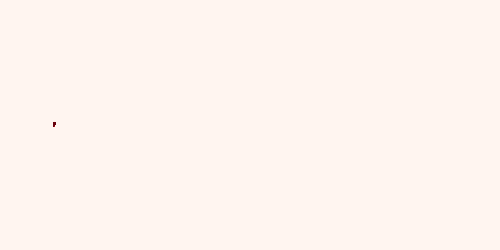

PomPy - puff-based odour plume model in Python¶
PomPy is a NumPy based implementation of the puff-based odour plume model described in
Farrell, J.A., Murlis, J., Long, X., Li, W. and Cardé, R.T., 2002. Filament-based atmospheric dispersion model to achieve short time-scale structure of odor plumes. Environmental fluid mechanics, 2(1-2), pp.143-169. Index page (springer.com) :: PDF (semanticscholar.org)
PomPy allows simulation of dynamic 2D odour concentration fields which show some of the key characteristics of real chemical plumes in turbulent flows including short term intermittency, diffusive effects and longer term variations in spatial extent and location, while being cheaper to run than a full fluid dynamics simulation.
An example simulated concentration field generated by the package is shown below
